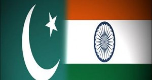

<?xml version="1.0" encoding="UTF-8"?>
<rss version="2.0"
	xmlns:content="http://purl.org/rss/1.0/modules/content/"
	xmlns:wfw="http://wellformedweb.org/CommentAPI/"
	xmlns:dc="http://purl.org/dc/elements/1.1/"
	xmlns:atom="http://www.w3.org/2005/Atom"
	xmlns:sy="http://purl.org/rss/1.0/modules/syndication/"
	xmlns:slash="http://purl.org/rss/1.0/modules/slash/"
	>

<channel>
	<title>Chronosynclastic Infundibulum &#187; Kashmir</title>
	<atom:link href="http://www.semanticoverload.com/tag/kashmir/feed/" rel="self" type="application/rss+xml" />
	<link>http://www.semanticoverload.com</link>
	<description>The world through my prisms</description>
	<lastBuildDate>Thu, 07 Apr 2011 17:36:17 +0000</lastBuildDate>
	<language>en-US</language>
	<sy:updatePeriod>hourly</sy:updatePeriod>
	<sy:updateFrequency>1</sy:updateFrequency>
	<generator>http://wordpress.org/?v=3.5</generator>
		<item>
		<title>Pakistani office mate</title>
		<link>http://www.semanticoverload.com/2008/09/05/pakistani-officemate/</link>
		<comments>http://www.semanticoverload.com/2008/09/05/pakistani-officemate/#comments</comments>
		<pubDate>Fri, 05 Sep 2008 20:09:42 +0000</pubDate>
		<dc:creator>Semantic Overload</dc:creator>
				<category><![CDATA[humor]]></category>
		<category><![CDATA[funny]]></category>
		<category><![CDATA[humour]]></category>
		<category><![CDATA[india]]></category>
		<category><![CDATA[Kashmir]]></category>
		<category><![CDATA[office]]></category>
		<category><![CDATA[pakistan]]></category>
		<category><![CDATA[PhD]]></category>

		<guid isPermaLink="false">http://www.semanticoverload.com/?p=205</guid>
		<description><![CDATA[So I have a new office mate, and she is Pakistani. Sometimes things just fall in place so beautifully that you cant resist but make up a story. This would be one of those times. We both have the same academic adviser, and she&#8217;s American. I also have a Russian in my PhD committee. You [...]]]></description>
				<content:encoded><![CDATA[<p><a href="../../../wp-content/uploads/2008/09/india_pakistan_flag.jpg"></a>So I have a new office mate, and she is Pakistani. Sometimes things just fall in place so beautifully that you cant resist but make up a story. This would be one of those times. We both have the same academic adviser, and she&#8217;s American. I also have a Russian in my PhD committee. You see where this is going? :-)<br />
As luck would have it, we have three desks in the office. One for me, one for my office mate, and a third unassigned desk. Now this got my mind racing. This could be the perfect setting for a mini south Asian international politics! Ok, stay with me on this one.<br />
What if I drew a line across the office and said, &#8220;Hey this side is mine, and is India. The other side is yours and is Pakistan.&#8221; Of course, each of our desks would be in our &#8216;country&#8217;, but there is the matter of the third desk. No that&#8217;s got to be Kashmir! Draw a line across the third desk and say, &#8220;This side is Pakistan controlled Kashmir, and my side is India controlled Kashmir.&#8221; Wait, this gets better.<br />
Now that we have established our sovereign regions, we should have the right to defend it. If my office mate steps into &#8216;India&#8217; without my permission, then it shall be considered as aggression, and act of war, and I will have the right to defend my &#8216;nation&#8217;. I will do so by attacking her with spitballs (kinda like <a href="http://www.funny-games.biz/spitball-warrior.html">this game</a>).</p>
<p>My office mate does have the right to complain, and most likely the issue will be taken up with our adviser, the American, and of course she&#8217;ll side with my office mate (Since they are both members of NATO, and war on terror on what not). Since Pakistan got the F-16s from the US, my office mate will get better equipment for research. Now its my turn to go crying to someone else. And who would that be? The Russian in my committee of course! Russia and India go way back! He&#8217;ll back me up by giving me some of this equipment for my research.</p>
<p>This is almost too perfect :-) I think we are going to have loads of fun this year. Oh, and there&#8217;s research too&#8230; eh&#8230; kinda. ;-)</p>
]]></content:encoded>
			<wfw:commentRss>http://www.semanticoverload.com/2008/09/05/pakistani-officemate/feed/</wfw:commentRss>
		<slash:comments>0</slash:comments>
		</item>
	</channel>
</rss>
